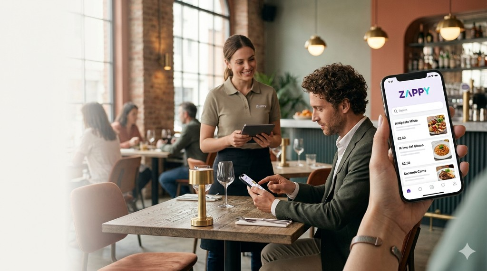
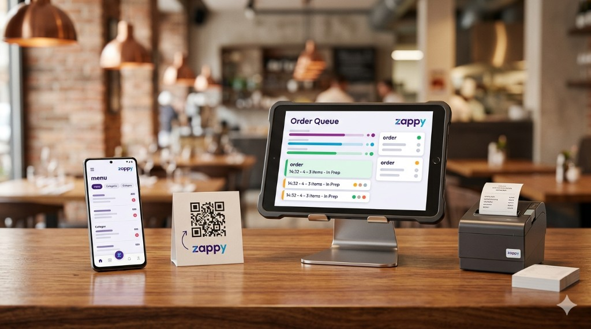

Con Zappy Match i clienti possono chattare tra tavoli, scoprire nuove persone e socializzare direttamente dal proprio posto. Ideale per eventi e serate dinamiche.
Sistema per locali
Ordini e pagamenti dal tavolo, in pochi secondi
Zappy è l’ecosistema completo che mette menu digitale, ordini in tempo reale e pagamento mobile nelle mani dei tuoi clienti — e ti libera il personale dalle comande ripetitive.
App · Tablet POS · Dashboard · Stampante · Starter kit

Più incassi
Turnover più rapido e upsell naturale sul digitale.
Meno attese
Ordini istantanei, code in cucina più fluide.
Zero errori
Comande chiare, note leggibili, meno rimandi.
Più tavoli gestiti
Stesso team, più coperti con meno attrito.
Servizi
Le App Zappy per il tuo locale
Un ecosistema di applicazioni pensato per bar, pub e beach club: dal menù QR al tablet del barista, fino alla dashboard di controllo per i titolari.
Zappy Land intrattiene bambini e ragazzi con giochi, disegni e animazioni divertenti per tutte le età.
Zappy Photo crea una gallery condivisa delle foto dei clienti: perfetta anche per promo social.
Zappy Room è l'app per sfidarsi a quiz a tempo, in solo o in gruppo.
Zappy Lucky attiva una ruota della fortuna ad ogni pagamento con coupon premio.
Le app che cambiano le regole del gioco.
Non parliamo di funzioni qualsiasi: sono esperienze uniche, progettate per rendere il tuo locale indimenticabile.
Con Zappy i clienti non vengono solo a bere o mangiare: rimangono, socializzano, giocano, condividono e parlano del tuo locale anche il giorno dopo.
Un’esclusiva che solo Zappy offre.
Nessun altro in Italia ha un ecosistema integrato così potente. Ogni app è un magnete che aumenta il tempo di permanenza, lo scontrino medio e il passaparola spontaneo.
Il controllo è tuo.
Puoi attivarne una, due, tre... o tutte. Zappy si adatta al tuo stile e ai tuoi clienti, trasformando ogni serata in qualcosa che non possono trovare da nessun’altra parte.
Flusso
Dal QR al pagamento in tre passi
Niente app da scaricare per forza: il cliente apre il menu dal codice e paga quando vuole.
Scansiona il QR
Ogni tavolo ha un codice univoco. Il cliente è già associato al posto giusto.
Sfoglia il menu digitale
Foto, allergeni, varianti: tutto aggiornabile in tempo reale dalla dashboard.
Ordina e paga dal telefono
Pagamento contactless: meno contanti, meno attese al POS fisso.
Non un’app. Un sistema.
L’ecosistema Zappy
Software, app dedicate e hardware che lavorano insieme — dal cliente alla cucina.

App cliente
QR, menu, carrello e pagamento in un flusso continuo. Esperienza da brand premium.
iOS & Android
Wallet
Menu
Vai al carrello
App barista · Tablet
Vista ordini live, tavoli, priorità e stato preparazione. Interfaccia POS moderna, pensata per il ritmo del bancone.
Real-time
Tavoli
Coda ordini
LIVE
Nuovo
Dashboard admin
Menu, prezzi, immagini, categorie e reportistica. Tutto ciò che serve per governare il locale da un solo posto.
Analytics
CMS menu
ProdottoQty€
Negroni148
Pinsa229
Hardware · Stampante · Kit
Stampa comande automatica integrata. Starter kit con tablet, QR personalizzati e setup guidato — pronti all’uso.
Kitchen
On-site setup
Impatto
Più ricavi, meno attrito operativo
Zappy non “digitalizza per hobby”: ridisegna come il locale incassa e come il team lavora in sala.
Più guadagni
Turnover più veloce, scontrino medio più alto con suggerimenti e bundle sul digitale.
Meno personale in stress
Meno corse in sala per ordinazioni e conti: il team resta dove serve davvero.
Esperienza da brand forte
Un servizio che i clienti associano a innovazione e cura — anche prima del primo sorso.
All-in-one
Cosa include Zappy
Tutto ciò che serve per gestire ordini, pagamenti e operatività — non un modulo isolato.
App cliente multi-piattaforma
QR dinamici, carrello, split bill, pagamenti.
App barista / tablet POS
Coda ordini, stati, tavoli, priorità cucina.
Dashboard amministrazione
Menu, listini, immagini, ruoli, report.
Stampante comande + integrazione
Flusso automatico verso cucina e bar.
Starter kit hardware
Tablet, QR brandizzati, stampante, onboarding.
Supporto e aggiornamenti
Roadmap prodotto, assistenza dedicata al locale.
FAQ
Domande frequenti
No è obbligatorio: il menu si apre dal QR nel browser. L’app nativa offre esperienza ancora più fluida per chi la preferisce.
Le comande arrivano automaticamente alla stampante configurata nel kit. Routing e reparti sono impostabili dalla dashboard.
Sì: listini, immagini, disponibilità e varianti sono gestiti in tempo reale dall’admin senza toccare codice.
Il piano Enterprise copre governance multi-sede, permessi granulari e integrazioni con il tuo stack esistente.
Porta Zappy nel tuo locale
Demo personalizzata, tempi di setup e roadmap chiara — parliamo di numeri e operatività, non di slide.